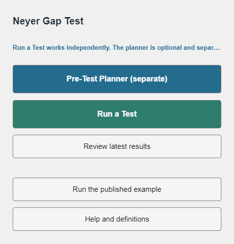
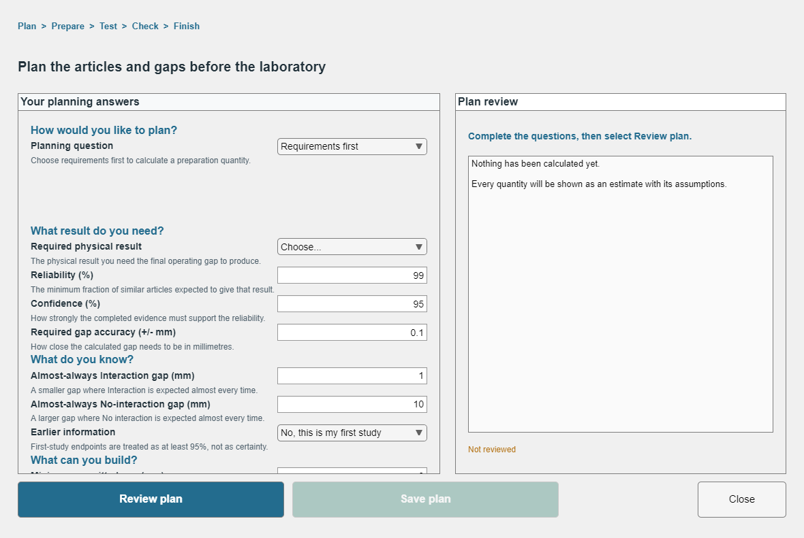
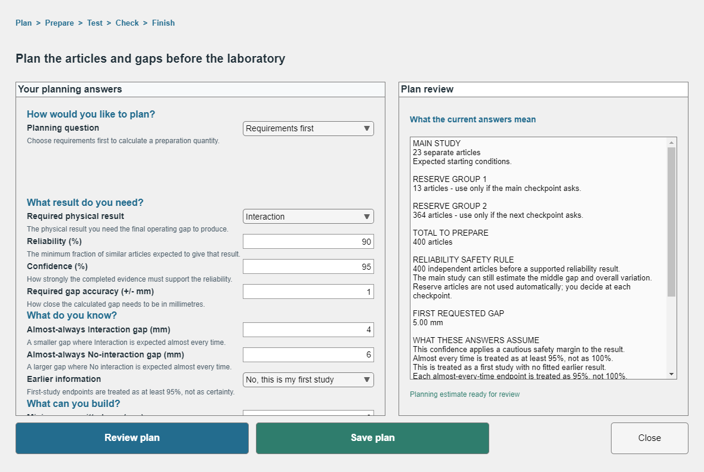
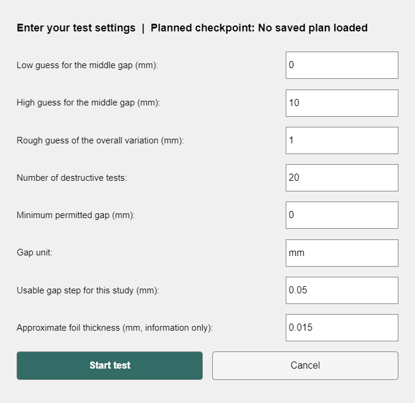
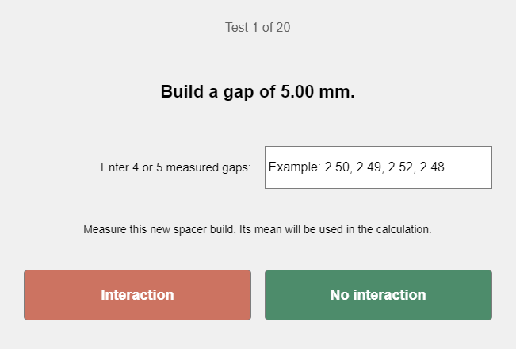
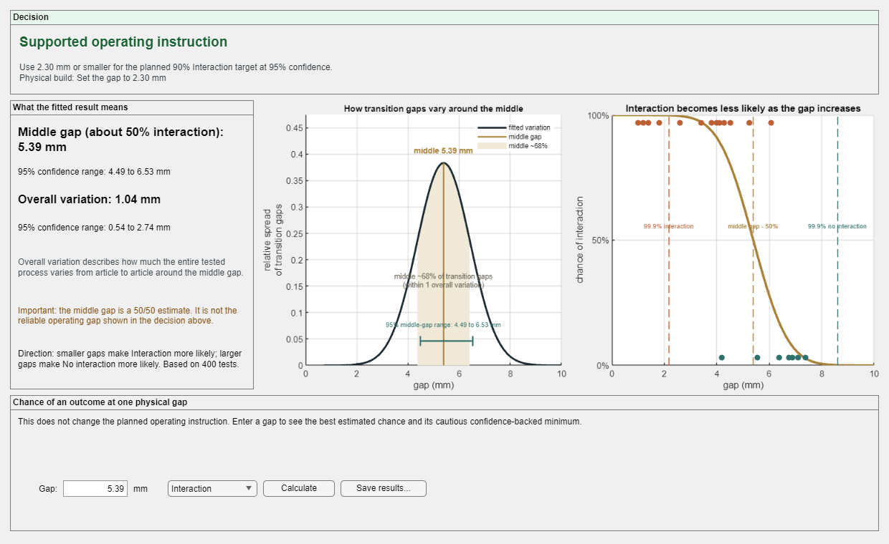
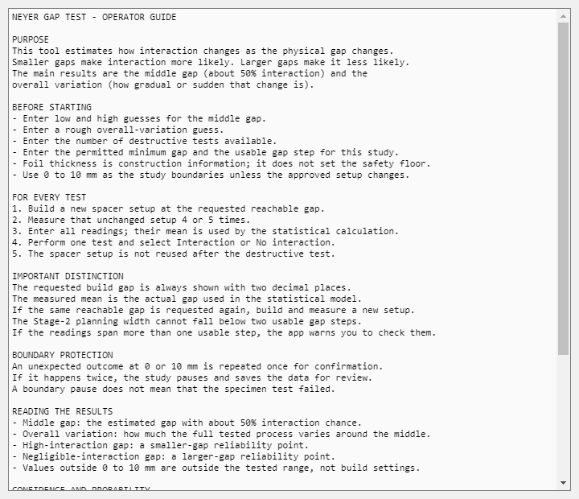

Follow the checked MATLAB screens in their real order.
This is a guide to the reviewed MATLAB workflow. It records one destructive test at a time and does not reproduce the calculation in the browser.
The seven screens

1. Main menu. Choose the Pre-Test Planner when articles and gaps still need planning, or start the test workflow after the plan is ready.

2. Planner inputs. Enter the planning answers in order. The tool uses the required result direction, evidence targets, endpoints, and reachable physical setup to form an estimate.

3. Planner review. Read the main group and reserve groups before saving. Reserve articles are offered at checkpoints; they do not continue the study automatically.

4. Test inputs. Confirm the study settings, including a positive usable gap step. Smaller gaps make Interaction more likely; larger gaps make No interaction more likely.

5. Requested gap and outcome. Build the stated two-decimal request, measure the unchanged setup, enter four or five readings, then select Interaction or No interaction after the destructive test.
If a requested 2.45 mm build measures 2.50, 2.50, 2.49, 2.52 and 2.48 mm, enter all five readings. Their measured mean, 2.498 mm, is used by the calculation.
The construction request remains 2.45 mm. The requested setting and measured mean are related but are not the same value: the request uses two decimal places, while the measured mean keeps the entered precision.

6. Results. Read the study decision and its limits. The middle gap and overall variation explain the response; the operating instruction is a separate answer for the required result direction.

7. Help and boundary protection. An unexpected result at a study boundary is repeated once for confirmation. If it happens twice, a boundary pause saves the data and asks for review. A boundary pause is a safe request for confirmation, not a failed experiment.